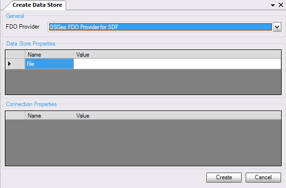
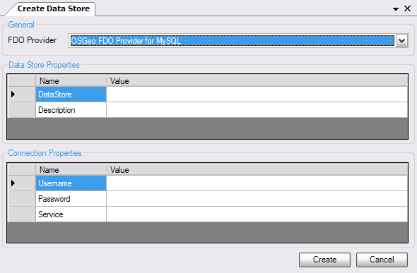
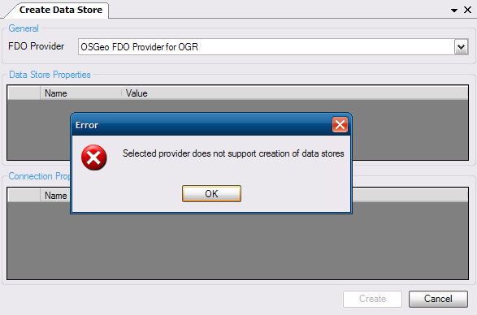
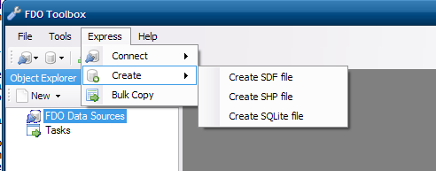
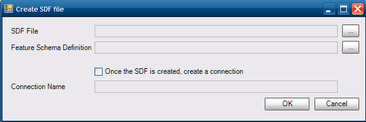

Data Stores¶
Creating Data Stores using the Generic Dialog¶
To create a data store, choose File - Create Data Store. Choose the FDO provider from the FDO Provider combo box. Once you have chosen the provider, the Data Store Properties grid will be filled with the required parameters for that provider.
For RDBMS-based providers (eg. MySQL, PostGIS) you need to also supply connection parameters. This is because a connection must first be established with the RDBMS before you can create a Data Store. Therefore the connection parameters must be valid, otherwise you will not be able to create the Data Store.
Be aware however, that not all FDO providers support data store creation. If you happen to select a provider that does not support data store creation, you will be greeted with the following message:
Creating flat file data sources¶
The Express Add-In provides a faster method of creating data stores. For example, creating a SDF data store is as simple as opening a save dialog and entering the name of the SDF file to create. The following providers, have support for creating data stores:
- SDF
- SHP
- SQLite
To use the express option, select your desired file format from the Express - Create menu.
When using the express method you will be presented with the following dialog
To create your data store, specify the following information:
- The path where the file will be created. This can be any of the supported file formats as stated above.
- The path to a serialized feature schema definition. If this is specified, after the data store is created the specified feature schema definition will be deserialized and applied to the newly created data store. Feature Schema Definitions can be created from the The Data Store Editor or by saving the schema of an existing connection.
- The name of the connection. If this is specified, once the data store is created a connection of the specified name will be created to it.
For SHP, the feature schema is required. Creating a SHP file will fail if a feature schema definition is not specified.
Please note that some feature schema definitions may not be applicable because it contains schema elements not supported by the target FDO provider. See provider-support for more information.